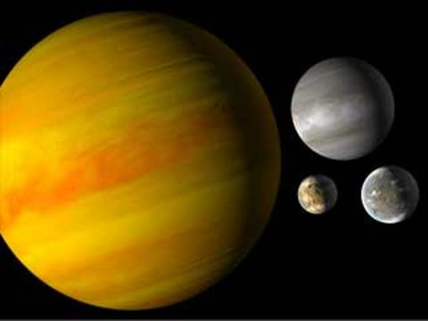

Neptunian exoplanets are similar in size to Neptune or Uranus in our solar system. Neptunian planets typically have hydrogen and helium-dominated atmospheres with cores of rock and heavier metals.
Neptunian exoplanets are similar in size to Neptune or Uranus in our solar system. (Neptune is about four times the size, or radius, of Earth and almost 17 times its mass, or weight.) Neptunian exoplanets may have a mixture of interiors though all would be rocky with heavier metals at their cores. Neptunian planets typically have hydrogen- and helium-dominated atmospheres. We’re also discovering mini-Neptunes, planets smaller than Neptune and bigger than Earth. No planets like these exist in our solar system.
